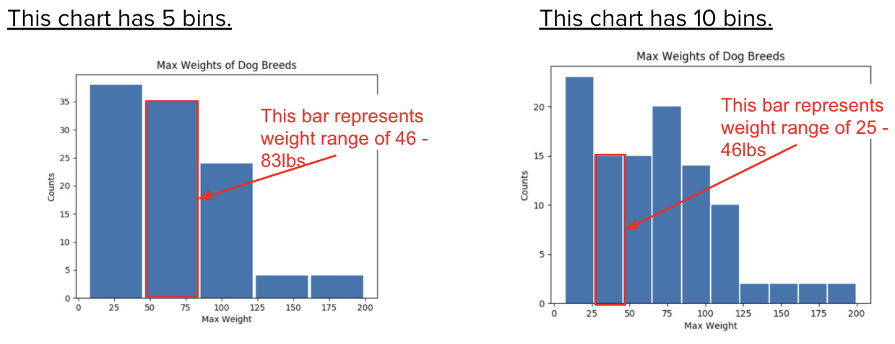

Lesson 6 - Histograms
At the end of this lesson, you will be able to:
- Create a histogram to visualize numeric data when a bar chart may be difficult to read.
Histograms
A histogram is the bar chart's close cousin, with one important difference: before anything gets counted, the numbers are grouped into ranges called bins. That's the answer to the too-many-bars problem from last lesson. Instead of one bar per weight, you get one bar per range of weights, and you decide how many ranges. (The white space between bars is only there for readability; it doesn't mean there's a gap in the data.) Look at the two charts below. What's different? Which one is more useful?

The screenshot annotations give approximate boundaries. These tables give the exact equal-width bins calculated from the dataset's minimum of 7 lbs and maximum of 200 lbs. A value on a boundary goes into the bin beginning there; only the final bin includes its upper boundary.
| Weight interval (lbs) | Breed records |
|---|---|
| 7 ≤ weight < 45.6 | 38 |
| 45.6 ≤ weight < 84.2 | 35 |
| 84.2 ≤ weight < 122.8 | 24 |
| 122.8 ≤ weight < 161.4 | 4 |
| 161.4 ≤ weight ≤ 200 | 4 |
| Weight interval (lbs) | Breed records |
|---|---|
| 7 ≤ weight < 26.3 | 23 |
| 26.3 ≤ weight < 45.6 | 15 |
| 45.6 ≤ weight < 64.9 | 15 |
| 64.9 ≤ weight < 84.2 | 20 |
| 84.2 ≤ weight < 103.5 | 14 |
| 103.5 ≤ weight < 122.8 | 10 |
| 122.8 ≤ weight < 142.1 | 2 |
| 142.1 ≤ weight < 161.4 | 2 |
| 161.4 ≤ weight < 180.7 | 2 |
| 180.7 ≤ weight ≤ 200 | 2 |
The histogram on the left splits the data into 5 bins, so weights of 47, 50, 77, and 81 all land in the same bar, the one running from 45.6 lbs up to, but not including, 84.2 lbs. Once they're in a bin, the chart forgets the individual numbers: a 47-pound breed and an 81-pound breed count exactly the same, as one more unit of height on that bar. That's the deal a histogram makes. You give up the details of each value, and in exchange you get to see the overall shape of the data at a glance.
Now look at the chart on the right, with 10 bins. Each bar covers a range about half as wide, so each bar from the left chart has been split into two. And something shows up that wasn't visible before. The tall first bar on the left (7 to just under 45.6 pounds, 38 breed records) turns out to be 23 breed records from 7 to just under 26.3 pounds and 15 from 26.3 to just under 45.6. And the second bar on the left splits into 15 and 20, so there's a second bump from 64.9 to just under 84.2 pounds. With 5 bins, the data looks like it just slopes downhill from small dogs to big ones. With 10, it looks more like two humps: lots of little dogs, a dip, and then another cluster of medium-large dogs.
Same data, same code, one number changed, and the chart tells a somewhat different story. That's the most important thing to know about histograms. The number of bins is a choice somebody made, and it can hide or reveal patterns. Keep that in mind as you look at the questions.
Questions:
- Why do you think 5 bins was chosen for this chart?
- What is the most common range of maximum weights for dog breeds?
- What is the least common range of maximum weights for dog breeds?
Show Solution
- 5 bins gives a clean overall picture: most breeds are under about 120 pounds, and very few are heavier. It's simple to read, which is a good reason to choose it. But it isn't the whole story. The 10-bin chart shows two separate clusters (lower recorded weights from 7 to just under 26.3 pounds, and another concentration from 64.9 to just under 84.2) that 5 bins smooths over. Neither chart is wrong; they answer slightly different questions.
- In the 5-bin chart, the most common range is 7 to just under 45.6 pounds, containing 38 breed records.
- In the 5-bin chart, two ranges tie for the lowest count: 122.8 to just under 161.4 pounds, and 161.4 through 200 pounds. Each contains 4 breed records.
Information from histograms
Why not just use a bar chart? Think back to last lesson. A bar chart gives every distinct value its own bar. That's great for max life span, where there are only a dozen or so possible values, but max weight could be almost any number from 7 to 200. A bar chart of weights would have a hundred skinny bars, most of them one breed tall, and you couldn't see any pattern at all. Grouping the values into ranges first is what makes the pattern visible.
So histograms need numeric data (you can't make a range out of "Herding" and "Toy"), and they earn their keep when a plain bar chart would have too many distinct values to read. Here's what a histogram can tell you:
- What range of value(s) are most common in this column?
- What range value(s) are least common in this column?
- What ranges of values do or do not appear in this column?
Max Weight histogram
Open this Colab Notebook and make a copy. Play with the number of bins and watch what happens. Too few bins and everything blurs into one lump; too many and it turns back into the unreadable bar chart. There's no single correct number. What you're looking for is a number where the shape stops changing much when you nudge it up or down by one or two; that's usually a sign you're seeing something real about the data, and not an accident of where the bin edges happened to land. And whenever you share a histogram, it's fair for someone to ask "what would this look like with a different number of bins?" You should be able to answer. Then make a histogram for another column in the "Dogs" table, settle on a number of bins that shows you something interesting, and answer the questions in the notebook.